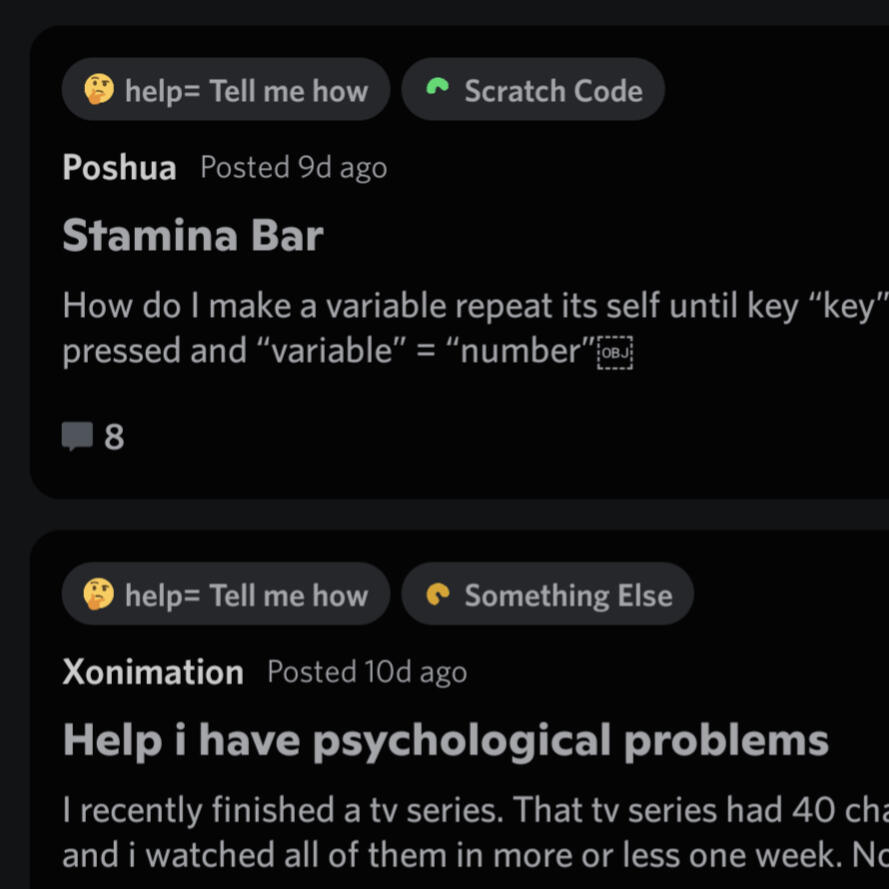
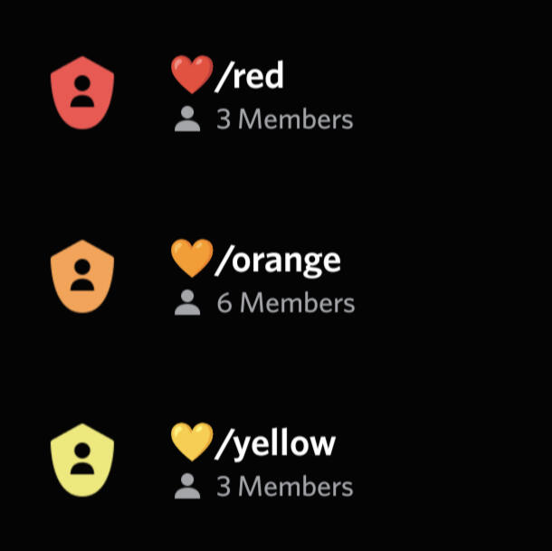
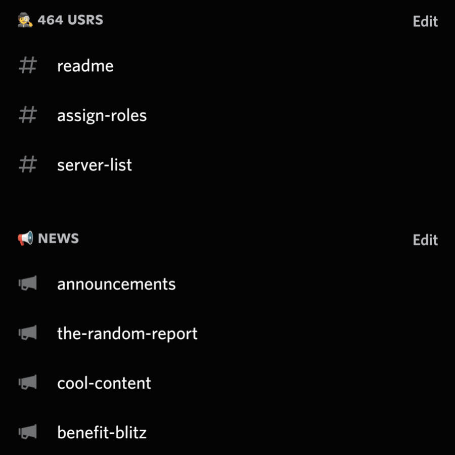

Hello, hi, and greetings! 👋 Scratch × Discord is a server to find Scratchers, get help with Scratch, and talk about Scratch on Discord. 💖 If you're already invested, click the invite button below. 🎯 Otherwise, scroll down to learn more!
Bene-Blitz
A Benefit Blitz rapidly improves a Scratch project statistics to make someone's day. Many times a month, members with a role are pinged to go 💞 like and ⭐ favorite a quality project chosen by a sudo (staff member) of the server (commenting and following optionally included). Usrs of Scratch × Discord can also request a project to be Blitzed.
Additional Features
-

Help channel
-

Color roles
-

Organized channels
Leveling roles that provide permissions after speaking for a short length of time.
Moderation to keep the server safe for everyone over 13 years old, guided by the server rules.
Channels to share creations, ask for help, post memes, & privately chat with sudos.
Testimonials
Scratch × Discord really lives up to it's name. It is a very active server in which scratchers can have trust that their answers, one way or another, can be answered. ... Although personally I have not been too active there, I can still feel the liveliness of this server, just like a booming community. Well Done! - Wjplatformer
You can catch up with others that scratch! Find all the related servers about scratching; griffpatch, scratch addons and more. Join it if you are a scratcher! - daniel4-scratch
This is an absolute fantastic concept, of users from Scratch (any genre, games, animation, design) can connect together on Discord! I truly recommend joining :) - Sycora
Amazing server and staff team, much better way to interact with scratch users than the Scratch Addons server! - BlueSkye
Scratch × Discord is an amazing Scratch server. It's fairly active and has lots of friendly members. Regardless of whether or not you are active on scratch, you should totally join! - pie-squared
It does have only 166 members and Scratch Addons has 661 members, but this small server is a lot better. The staff team really listens to me! :D I've heard of some designers on Scratch and a lot of them are here. It's really cool to talk with them. ... - Xan
Join over 500 people now
by clicking here :)
If you're looking for something related to Xan (the root or owner of S×D) on Scratch, go here.
Want more Scratch-related resources? There's a channel in the server dedicated to them, but you could also check out the following website for a few: scratch.crd.co
Scratch×Discord has a GitHub organization with Discussions. If you're unable to join S×D's Discord server, join the discussions.